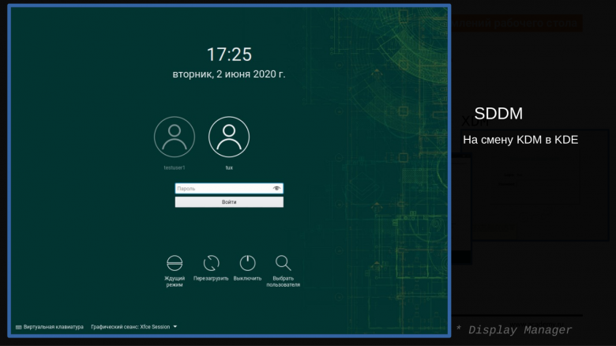
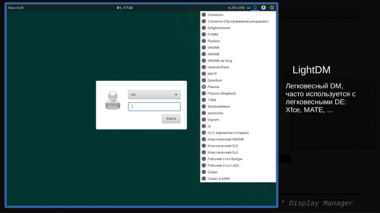

Графическое окружение
Как устроена графика в GNU/Linux?
Данная тема очень сильно интересует продвинутых
пользователей в GNU/Linux и почему же? А потому что это очень
обширная и необычная тема для разговора.
Итак начнем!
Выделяем три основных компонента и я перечислю их в порядке, как
они запускаются при старте системы:
1. DM (Display Manager)
2. Display Server
3. DE (Desktop Environment)
Дополнительно в качестве подпунктов у Desktop Environment:
* Apps Manager/Launcher/Switcher *
* WM (Window Manager) *
* различное ПО, поставляемое вместе со средой рабочего стола *
Теперь подробно по каждому пункту...
DM (Display Manager)
Это первое приложение, которое запускается при старте <графики>.
По-русски оконный менеджер. Его основные задачи:
- спросить, каких пользователей пустить в систему, запросить аутентификационные
данные (пароль, отпечаток пальца);
- выбрать, какую среду оформления рабочего стола запустить.
На текущий момент в различных дистрибутивах широко используются:
* SDDM *

* LightDM *

Главное, чтобы было понятно, что есть такое приложение,
которое отвечает за запуск графики и допуск пользователя к этой графике, и
есть разные реализации этого приложения, различающиеся внешним видом и немного
функционалом.
Display Server
Это некий фундамент графики, основная задача которого - работать с видеокартой,
монитором и с различными устройствами ввода (клавиатура, мышь, тачпады). То есть
приложению (например, браузер или текстовый редактор), которое отрисовывается в
графике, не нужно знать, как напрямую работать с устройствами, не нужно знать про
драйверы. Это все на себя берет X Window.
Когда говориться про Display Server, то много лет в GNU/Linux, да и в Unix имелось в виду приложение X Window System или в простонароде иксы. Сейчас во многих дистрибутивах внедряют Wayland.
Компоненты DE
По факту DE это уже законченная графическая оболочка, с множеством различных
плюшек, из которых собственно и состоит рабочий стол.
Значит пройдемся быстро по этим компонентам:
* кнопки пуск *
* докеры *
* службы, которые запускают приложения при нажатии горячих клавиш *
* меню-образные лаунчеры *
Оконный менеджер
Это некое приложение, которое отвечает за управление окнами. Она добавляет
возможность:
- перемещать окна по рабочему столу
- изменять размеры окон
- добавлять к интерфейсу окна заголовки и прочие элементы
- понятие, какое приложение находится в фокусе
Вот мы и рассмотрели основные понятие о графической среде. А подробнее вы можете узнать в интернете!